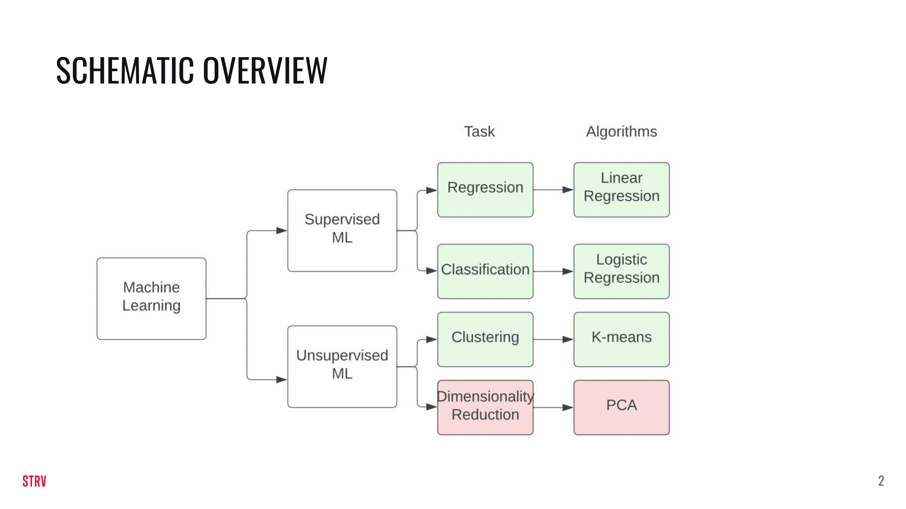
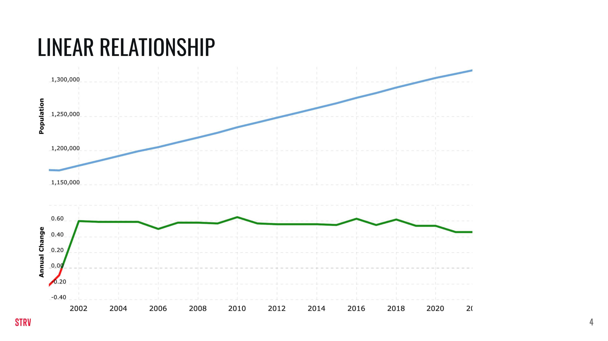
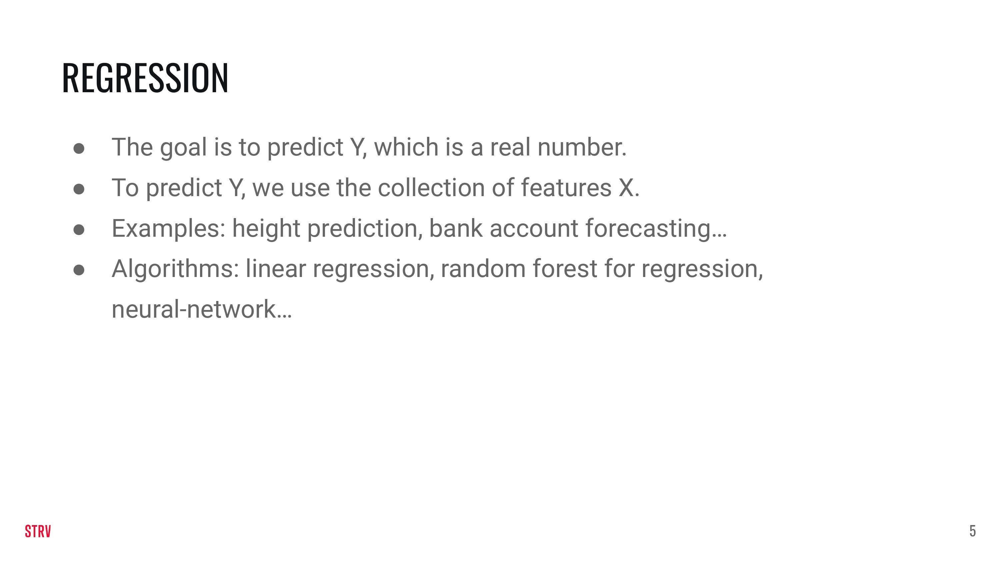
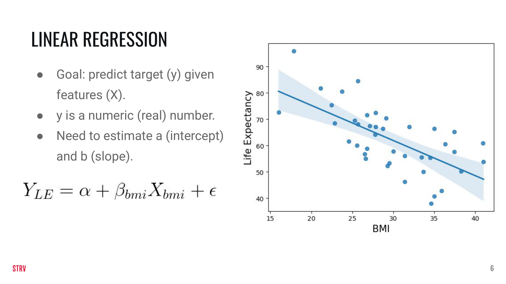
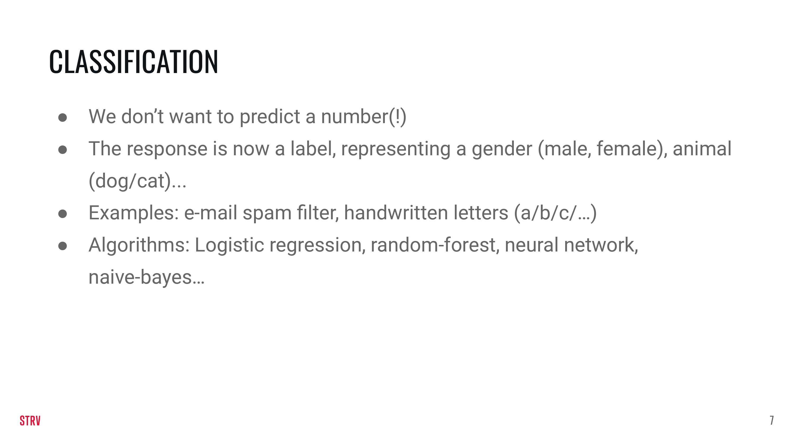
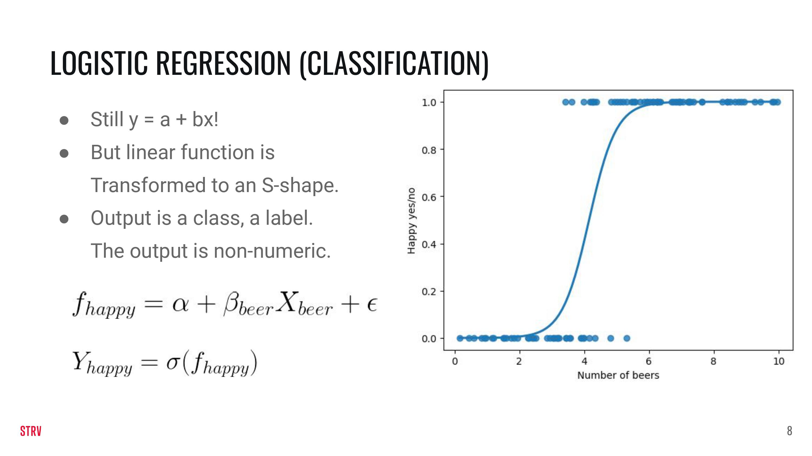
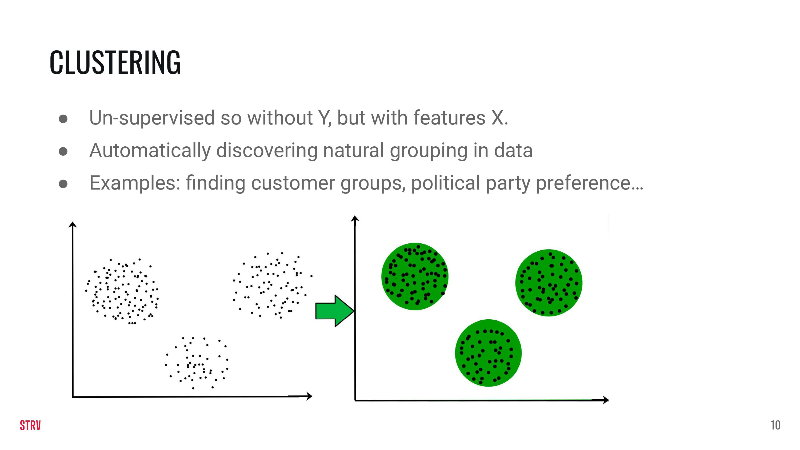
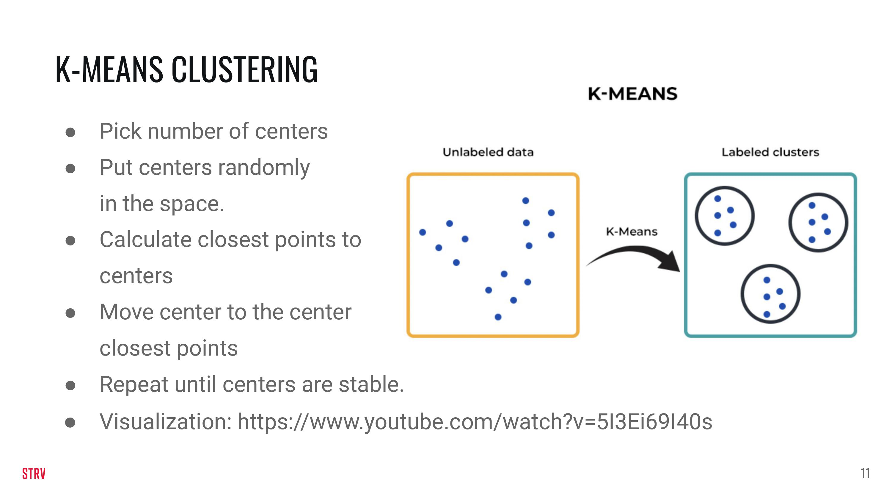

LECTURE 3: ML MODELS
Contents
LECTURE 3: ML MODELS#
In this lecture we are going to build upon the knowledge of last week. In addition to this notebook there are a few slides that explain the various ML models slighly deeper.
This week you will learn:
The difference between supervised and unsupervised ML.
The difference between regression and classification.
How to train supervised and unsupervised ML models.

import numpy as np
import pandas as pd
from matplotlib import pyplot as plt
LINEAR REGRESSION#



We are going to generate our own data so that it fits the linear regression model. The data are generated as \(y = \alpha +\beta X + \epsilon\). In the previous equation, y is the target or the response, \(\alpha\) is the intercept, \(\beta\) is the slope, \(X\) are the features and \(\epsilon\) is an error term because data are normally quite noisey.
def generate_dataset(beta, alpha, std_dev, n):
np.random.seed(123)
# Generate x as an array of `n` samples which can take a value between 0 and 10
X = np.random.random(n) * 10
# Generate the random error of n samples, with a random value from a normal distribution, with a standard
# deviation provided in the function argument
e = np.random.randn(n) * std_dev
# Calculate `y` according to the equation discussed
y = alpha + X * beta + e
return X, y
Using the function above you can generate data (you can modify the parameters!).
X_linear, y_linear = generate_dataset(beta=-2, alpha=2, n=40, std_dev=10)
We load the data in a pd DataFrame.
linear_df = pd.DataFrame(
{
'X' : X_linear,
'y' : y_linear
}
)
We split the data in a train and a test using sklearn.
from sklearn.model_selection import train_test_split
train_linear_df, test_linear_df = train_test_split(linear_df, test_size=0.2, random_state=123)
We plot the (train) data using matplotlib.
plt.scatter(train_linear_df['X'], train_linear_df['y'])
plt.xlabel('X')
plt.ylabel('y')
plt.show()
Now that we have the data, it is time to use a linear regression model on it! We do so by importing the model from the sklearn library.
from sklearn.linear_model import LinearRegression
linear_regression_model = LinearRegression(fit_intercept=True).fit(X=train_linear_df[['X']], y=train_linear_df['y'])
Our model is supposed to find the parameters that we originally used to generate the data! How hard it is for the model to find these depends on n (the number of data points) but also on the standard deviation that was used to add randomness to the data.
print('The trained model gives us a value of: {} for alpha and a value of: {} for beta.'.format(linear_regression_model.intercept_,
linear_regression_model.coef_[0]))
The trained model gives us a value of: -0.5221163591580069 for alpha and a value of: -1.2722502587897906 for beta.
We can now plot a line using the parameters that our linear regression model found to determine visually how close our model is to the data. We will first plot the model on the train data and test on the test data.
plt.scatter(train_linear_df['X'], train_linear_df['y'])
plt.plot(train_linear_df['X'], linear_regression_model.predict(train_linear_df[['X']]), color='k')
plt.xlabel('X')
plt.ylabel('y')
plt.show()
We can do the same for the test set. The model was not trained on these data, yet it should do an alright job in prediction these values given that they were generated by the same distribution.
plt.scatter(test_linear_df['X'], test_linear_df['y'])
plt.plot(test_linear_df['X'], linear_regression_model.predict(test_linear_df[['X']]), color='k')
plt.xlabel('X')
plt.ylabel('y')
plt.show()
We will now test our model on both the training data and the testing data. For performance assessment we will be using a metric called the “mean-squared-error”. This is a metric for regression problems.
For now the following intuition will do: the lower the metric, the better.
from sklearn.metrics import mean_squared_error
y_train_true = train_linear_df['y']
y_train_predict = linear_regression_model.predict(train_linear_df[['X']])
mean_squared_error(y_train_true, y_train_predict)
119.62725550587597
y_test_true = test_linear_df['y']
y_test_predict = linear_regression_model.predict(test_linear_df[['X']])
mean_squared_error(y_test_true, y_test_predict)
101.405217222011
LOGISTIC REGRESSION#


For logistic regression we sort of stick with the linear data \(z = \alpha +\beta X + \epsilon\). On top of it we use another function to map the data to probabilities and then to classes, but the details of it are outside the scope of this lecture.
def generate_dataset_logistic_regression(beta, n, std_dev, alpha):
np.random.seed(123)
# Generate x as an array of `n` samples which can take a value between 0 and 10
X = np.random.uniform(-1, 1, n) * 1
# Generate the random error of n samples, with a random value from a normal distribution, with a standard
# deviation provided in the function argument
e = np.random.randn(n) * std_dev
# Calculate `y` according to the equation discussed
z = alpha + X * beta + e
pr = 1/(1+np.exp(-z))
y = pr > 0.5
return X, y
Again, play with the parameters to change the generation of the data.
X_logistic, y_logistic = generate_dataset_logistic_regression(beta=100, n=100, std_dev=2, alpha=5)
logistic_df = pd.DataFrame(
{
'X' : X_logistic,
'y' : y_logistic
}
)
train_logistic_df, test_logistic_df = train_test_split(logistic_df, test_size=0.2, random_state=25)
plt.scatter(train_logistic_df['X'], train_logistic_df['y'])
plt.xlabel('X')
plt.ylabel('y')
plt.show()
from sklearn.linear_model import LogisticRegression
logistic_regression_model = LogisticRegression(fit_intercept=True) \
.fit(X=train_logistic_df[['X']],
y=train_logistic_df['y'])
We will again plot the as in the previous example. Note that there will be a cut-off point between the two classes. The cut-off point is place where the horizontal line (black striped) intersects with the red S-shaped curve.
data_to_plot = np.arange(-1, 1, 0.01).reshape(-1, 1)
plt.scatter(train_logistic_df['X'], train_logistic_df['y'])
plt.axhline(y=0.5, color='black', linestyle='--')
plt.plot(data_to_plot, logistic_regression_model.predict_proba(data_to_plot)[:,1], linestyle='solid', label='Logistic regr', color='red')
plt.show()
/Users/jan/miniconda3/envs/ds-academy-development/lib/python3.9/site-packages/sklearn/base.py:450: UserWarning: X does not have valid feature names, but LogisticRegression was fitted with feature names
warnings.warn(
data_to_plot = np.arange(-1, 1, 0.01).reshape(-1, 1)
plt.scatter(test_logistic_df['X'], test_logistic_df['y'])
plt.plot(data_to_plot, logistic_regression_model.predict_proba(data_to_plot)[:,1], linestyle='solid', label='Logistic regr', color='red')
plt.show()
/Users/jan/miniconda3/envs/ds-academy-development/lib/python3.9/site-packages/sklearn/base.py:450: UserWarning: X does not have valid feature names, but LogisticRegression was fitted with feature names
warnings.warn(
For classification we cannot use the mean squared error. However, we can use the f1 metric. This metric goes from 0 to 1 and higher means better.
from sklearn.metrics import f1_score
y_train_true = train_logistic_df['y']
y_train_predict = logistic_regression_model.predict(train_logistic_df[['X']])
f1_score(y_train_true, y_train_predict)
1.0
y_test_true = test_logistic_df['y']
y_test_predict = logistic_regression_model.predict(test_logistic_df[['X']])
f1_score(y_test_true, y_test_predict)
0.923076923076923
CLUSTERING#


For Clustering we will not create our own function to generate the data. Instead we will rely on the make_blobs function that is part of sklearn.
from sklearn.datasets import make_blobs
from sklearn.cluster import KMeans
features, clusters = make_blobs(n_samples = 2000,
n_features = 2,
centers = 5,
cluster_std = 2,
shuffle = True)
Clustering is an unpervised method. This means thst the data we are looking at does not have a reponse. Instead, to make our problem more interesting, we are using two features. Note that the Y-axis now displays a second feature instead of the response (as was the case for regression and classification).
plt.scatter(features[:,0], features[:,1])
plt.xlabel('X1')
plt.ylabel('X2')
plt.show()
#Initialize the class object
kmeans = KMeans(n_clusters=5)
#predict the labels of clusters.
predictions = kmeans.fit_predict(features)
#filter rows of original data
for label, colour in zip(range(4), ['red', 'green', 'yellow', 'black']):
filtered_label = features[predictions == label]
plt.scatter(filtered_label[:,0] , filtered_label[:,1] , color=colour)
plt.show()
Evaluation for clustering is a bit different. In contrast with the supervised methods of regression and classification, we do not have ground-true data. To determine whether our cluster algorithm did a good job, we need to take two things into account:
The distance between the centers of clusters need to be far away.
The data points assigned to a particular cluster center need to be as close to the center as possible.
These two points are balanced together in the silhouette_score. This score ranges from -1 to 1 and the higher the score the better.
from sklearn.metrics import silhouette_score
silhouette_score(features, predictions)
0.39676782393655824
EXERCISES#
We will fetch the Titanic dataset from sklearn. X contains some features regarding passenger characteristics of the Titanic. y contains their binary survival (0 for drown, 1 for survival).
from sklearn.datasets import fetch_openml
X, y = fetch_openml('titanic', version=1, as_frame=True, return_X_y=True)
X.drop(['boat', 'body', 'home.dest', 'name', 'cabin', 'ticket'], axis=1, inplace=True)
X['age'] = X['age'].fillna(0)
We can describe the dataset like this:
X.head()
| pclass | sex | age | sibsp | parch | fare | embarked | |
|---|---|---|---|---|---|---|---|
| 0 | 1.0 | female | 29.0000 | 0.0 | 0.0 | 211.3375 | S |
| 1 | 1.0 | male | 0.9167 | 1.0 | 2.0 | 151.5500 | S |
| 2 | 1.0 | female | 2.0000 | 1.0 | 2.0 | 151.5500 | S |
| 3 | 1.0 | male | 30.0000 | 1.0 | 2.0 | 151.5500 | S |
| 4 | 1.0 | female | 25.0000 | 1.0 | 2.0 | 151.5500 | S |
X.describe()
| pclass | age | sibsp | parch | fare | |
|---|---|---|---|---|---|
| count | 1309.000000 | 1309.000000 | 1309.000000 | 1309.000000 | 1308.000000 |
| mean | 2.294882 | 23.877515 | 0.498854 | 0.385027 | 33.295479 |
| std | 0.837836 | 17.590848 | 1.041658 | 0.865560 | 51.758668 |
| min | 1.000000 | 0.000000 | 0.000000 | 0.000000 | 0.000000 |
| 25% | 2.000000 | 7.000000 | 0.000000 | 0.000000 | 7.895800 |
| 50% | 3.000000 | 24.000000 | 0.000000 | 0.000000 | 14.454200 |
| 75% | 3.000000 | 35.000000 | 1.000000 | 0.000000 | 31.275000 |
| max | 3.000000 | 80.000000 | 8.000000 | 9.000000 | 512.329200 |
We want to see how many NA’s we have in our data.
round(X.isna().mean() * 100, 1)
pclass 0.0
sex 0.0
age 0.0
sibsp 0.0
parch 0.0
fare 0.1
embarked 0.2
dtype: float64
We found out that we have a few NA’s in both fare and embarked and a lot in age. We are going to drop the rows with NA’s in fare and embarked. For the missing values of age we will use an imputation method.
mask = ~pd.isnull(X[['fare', 'embarked']]).any(1)
X, y = X[mask].reset_index(drop=True), y[mask].reset_index(drop=True)
EXERCISE 1#
A new Titanic is leaving Southamption, so for obvious purposes data from the first edition has to be re-examined.
A researcher is tasked to analyse data from the Titanic 1.0 and to come up with a model for survival probabilities. The tasks are the following:
1a) Use sklearn’s one-hot-encoder to encode the ‘sex’ and the ‘embarked’ features in the dataset.
1b) Use sklearn’s linear regression model on the non-zero elements of the ‘age’ feature to predict the zero-elements of the ‘age’ feature.
1c) Use sklearns logistic regression model to predict the survival rate.
EXERCISE 2#
We also want to marketeer our new Titanic and therefor we want to address specific groups of people. To setup a marketing campaign we want to lump Titanic passengers together in a smart way. After some discussion, a cluster analysis is agreed upon.
Apply a cluster analysis on the features ‘fare’ and ‘age’. Determine which number of clusters (k) is the best. Plot your results.